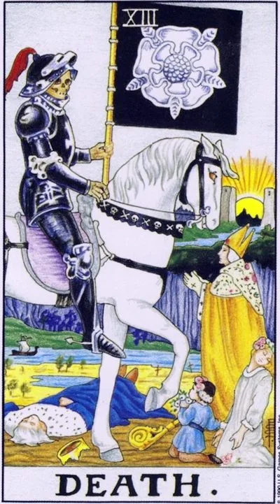

Старший аркан · XIII
XIIIСмерть
Death
Конец главы, который нельзя отменить: старое уходит, освобождая место новому, — единственная настоящая гарантия карты.
Архетип и основное значение
Смерть в Таро — не могила, а дверной проём. Всадник на карте движется медленно и неудержимо: то, что должно закончиться, закончится независимо от наших ходатайств. Белая роза на знамени напоминает — за всяким концом спрятано обновление.
В раскладе карта объявляет о финале цикла: отношений, работы, этапа жизни, версии себя. Попытки удержать отжившее болезненнее самого перехода. Смерть щадит тех, кто не цепляется: она забирает форму, но не суть.
Это аркан глубокого очищения. Как в природе ничего не исчезает, а перегнивает в новую жизнь, так и личная история, сброшенная с плеч, становится почвой для следующего сезона.
В быту
Хороший день, чтобы разобрать кладовку, шкаф и телефонную книгу — выбросить, отдать, попрощаться. Завершите то, что давно висит: заявление, возврат, последнее письмо. Разрыв с надоевшей привычкой пройдёт легче, чем обычно.
Работа и карьера
В работе происходит смена эпох: проект закрывается, команда распускается, профессия перестаёт кормить. Карта советует не спасать утопающее, а забрать опыт и уйти красиво. Резкая перемена — увольнение, смена сферы, продажа бизнеса — сейчас не риск, а своевременность.
Отношения
Отношения достигли точки невозврата: прежними они не станут — либо перерождение союза на новых условиях, либо честное прощание. Цепляние «ради детей», «квартиры» и «уже восемь лет» продлевает агонию и ранит всех. Для одиночек — конец долгой влюблённости в недоступного человека, освобождающий место живому чувству.
Здоровье
Карта редко говорит о физической смерти — чаще о серьёзной перестройке: операции, курс лечения, отказ от старого образа жизни. Хроническая болезнь может наконец быть названа своим именем и взята под контроль. Период требует уважения к процессу: тело меняется, не торопите его, но и не прячьтесь от обследований — ранняя честность здесь спасает.
Эзотерическое значение
Скорпионья природа аркана делает его картой посвящения в тайну преображения: старое «я» умирает ритуально, чтобы освободилась более крупная фигура. В практиках Смерть работает с отпусканием — писем, которые не отправят, вещей, которые сожгут, имён, которые перестанут произносить. Она же — покровительница работы с предками и тонкой настройке наследия рода.
Переход застрял наполовину: старое уже мертво, но его держат за руку и не дают выйти из комнаты.
Архетип и основное значение
Перевёрнутая Смерть — всадник, которого заставляют стоять. Перемены назрели и многократно объявлены, но человек держится за рухнувшее: за отношения, работающие на памяти, за работу, существующую в титрах, за себя прежнего.
Эта карта описывает полужизнь в коридоре между комнатами: дверь назад закрыта, вперёд не открыта, и всё время уходит на раскачивание ручки. Чем дольше задержка, тем жёстче финальный толчок.
Иногда она показывает и обратное — слишком частые, поверхностные «умирания»: человек сжигает мосты по мелочам, избегая единственного настоящего перехода, который действительно страшен.
В быту
Быт зарастает недоделками: ремонт стоит на середине, вещи умерших времён занимают полкомнаты, письма без ответа копятся месяцами. День требует одного решительного выброса — физического или бумажного. Застрявшие вопросы не решатся сами: чем дольше вы обходите их стороной, тем дороже будет финальный счёт.
Работа и карьера
Профессиональный застой с симптомами распада: зарплаты задерживают, проекты сворачиваются, а все держатся за тонущее место из страха перемен. Карта честно предупреждает: спасать уже нечего, экономия сил на подготовку к новому выгоднее героической обороны. Возможен и внутренний вариант — работа, которую вы тайно ненавидите годами, но не смеетесь оставить.
Отношения
Отношения существуют по инерции: пара давно рассталась морально, но продолжает делить кров и праздники. Каждый новый виток ссор повторяет старый сценарий — ни конца, ни начала. Карта говорит прямо: удерживаемое насильно разлагается и травлит обоих.
Здоровье
Хронические состояния, которые лечат половинчато: курс брошен, симптомы заглушены, причина процветает. Тело застряло в болезни так же, как психика — в старой роли жертвы обстоятельств. Опасно и другое: игнорирование явных симптомов из страха диагноза.
Эзотерическое значение
В тонких практиках перевёрнутая Смерть — знак незакрытого перехода: духи неотпущенных связей, работа с утратой, которая была запрещена и не прожита. Человек может годами носить чужое незавершённое горе. Ритуальные формы завершения — поминовение, письмо умершему, символическое захоронение предмета — открывают замороженную энергию. Пока переход не прожит, сила циркулирует вокруг, не входя в жизнь.
🌿 Кратко и просто
Основная идея
Смерть — не обязательно физическая смерть. В первую очередь это необратимое изменение. Старое состояние заканчивается, чтобы могло начаться новое.
Как проявляется
Завершение этапа, увольнение, выход на пенсию, разрыв отношений, переезд, смена профессии, окончательное решение.
Работа
Человек перестаёт быть тем, кем был раньше, и начинает новую жизнь уже в другой роли. Деньги Потери, необратимые решения, прекращение старого способа использования имущества или денег.
Теневая сторона
Главная проблема — отказ принимать перемены.
Особенность школы
Смерть связана со Скорпионом и VIII домом, Плутоном и Аидом. Главная мысль карты: смерть — не конец пути, а одна из его важнейших границ.
📜 Развёрнуто — выжимки лекций
Суть карты
Он снимает ужас клиентов: «ничего такого глобального страшного в этой карте нет — это скорее более философская карта», хотя иногда она напрямую говорит об угасании жизни. Ядро — трансформация и выход за пределы: число 13 означает «выход по другую сторону» — час после полночи, следующий виток колеса Зодиака; отсюда «несчастливость»: 13 «уже не принадлежит нашему миру». Оккультное толкование по Уэйту «в целом позитивнее, чем общепринятое значение»: перемены, «переходы от низшего к высшему», возрождение, «место прибытия». Это не конец: «это не Рагнарёк… ещё одна веха на пути к новой, другой жизни» — над картой между двумя башнями сияет солнце бессмертия. Архетип прост: «главный смысл аркана выражается одним словом — названием; главный смысл смерти — это смерть»; при этом смерть — «не столько личность и даже не ситуация, сколько общий принцип», как Император — закон порядка.
Прямое положение
- Значения даёт «по социуму и желаниям», называя условными — тонкости остаются закрытым группам.
- - Социум: равенство («все умрут, все там будем»), непоколебимость познавших смерть («пчёлы — та же фигня… бояться нечего»); смерть «не принимает аргументов».
- - Работа, роль: новая деятельность; увольнение/пенсия: человек «умирает для общества в прежнем виде»: «Иван Иванович-начальник умер — теперь Иван Иванович-охотник родился».
- - Финансы: потери («что-то для вас умерло»); необратимое решение — «билет в один конец»: Харон возит «только в одну сторону», «фарш невозможно прокрутить назад». Новый формат имущества: квартиру переводят под кафе — помещение «умерло», но «родилось в мире ресторанов».
- - Саморазвитие: суровое всеобщее равенство; решимость — смирившиеся со смертью («мы всё равно не жильцы»: немецкая подлодка, спартанцы) идут на подвиг; пересмотр приоритетов, «убрать лишнее»: «в Макдональдс бегал — купил проездной в бассейн»; прежний умирает, рождается другой.
- - Эмоции, личная жизнь: принятие неизбежного — чаще разрыв отношений, вы уходите «в мир без этого человека»; окончательное решение; прощение неисправимой ошибки; переезд за границу — прежний житель родины умер.
- Телесное — только через VIII дом («смертельные болезни») и пример ЗОЖ.
Негативное значение
Работает формула нейтральности: «всё зависит от того, хорошо это для вас или нет — вопрос второй»; карта — о процессах, «протекающих помимо воли человека». Минусы придаточно: игнорирующие перемены «расплачиваются за это» — «судьба ломает через колено тех, кто не понимает намёков судьбы»; скорпион жалит «в незащищённое место», как Ахиллеса; вампир, не желающий меняться, лишь существует. По сути «то же самое с неприятным привкусом»: страх вместо принятия.
Акценты и фишки школы
- - Астрология системы: VIII дом / Скорпион, фон — Марс, явно — Плутон, «он же Аид». Ось II–VIII: Телец, Венера, Хирон — своё, «правильное» против чужого и запретного; «в противоположных домах всегда есть что-то общее — две стороны одной монеты».
- - Начинка VIII дома: переменные, наследство, долги, кредиты, чужие деньги, крупные финансы, крупный бизнес («всё стекается в землю» — Плутос); магия, мистика, паранормальное; секс на адреналине — продолжение рода при близости смерти; опасные профессии. Три ступени Скорпиона = уровни развития. Парадокс: «война быстрее всего движет прогресс человечества… смерть — это прогресс».
- - Символика: всадник — одно из видений Апокалипсиса; белая роза на чёрном флаге: «роза — это жизнь; чёрное — отсутствие, белое — присутствие»; река как Стикс; ладья Харона и монеты покойнику — «всегда чем-то нужно жертвовать… просто так туда не пустят» (мостик от Повешенного); башни повторятся в Луне.
- - Детали рисунка (ход справа налево, позы фигур) — «не натягивайте сову на глобус»: художник так видел. Демарш против книг сочетаний: «зачем плодить сущности без нужды… даже Хайо Банцхаф этим баловался» (единственное упоминание автора).
- - Египет: Анубис — страж весов (преемственность от Справедливости); собака — древний образ страха: лай означал угрозу, «человек перепоручал бояться за себя собаке»; сравнение с Гермесом он принимает лишь как «всхожесть функций»; хвалил Анубиса в «Американских богах». Геката — богиня лунного света, преисподней, ведьм и ядов; скорпионьей матери-целительнице отвечает образ няни: «мать любит — няня наказывает», поэтому Скорпионы — строгие администраторы вроде Мэри Поппинс. Цербер рационализировали в ядовитую змею — «домашнюю зверушку Аида сократили до собаки».
- - Аид по Гомеру «щедрый и гостеприимный» и хранитель богатств; страшное имя вытеснил Плутон.
- - Бессмертие: «бессмертный человек — тот, который знает своё слабое место и прячет его» — ахиллесова пята и Кощей с иглой в яйце «на мировом древе». Славянский ряд скромен: Кощей и белорусская «Дикая охота короля Стаха» Короткевича.
- - Дикая охота — память о набегах, предвестие войны/чумы; предводительница Геката. Danse macabre чумной эпохи ведёт к могиле все сословия; осознавший смертность «начинает думать о высоких понятиях».
- - Кино: «Фонтан» Аронофски — его фильм №1 всех времён и народов (конкистадор, врач, космонавт в звездолёте-дереве); «смерть — это дорога к величию», «отправная точка пути к бессмертию»; «не надо понимать, надо смотреть и чувствовать» — ощущение как при работе с картами. «Пункт назначения» — неизбежное догонит убежавших; Белые ходоки «Игры престолов» «воевали против всех»; «Интервью с вампиром» — три вампира = три ступени Скорпиона, вампир живёт чужим, как скорпион-финансист чужими деньгами; «Грань будущего» — день сурка и безошибочность: «спасая других, спасаешь себя»; из чата — «Мертвец» Джармуша.
- - Темп: на «что быстрее — Смерть или Башня?» отвечает «времени в картах таро нет»; движется всю жизнь — случается мгновенно.
- - Мостик вперёд: Умеренность — «правильное изменение, перетекание форм»; понявший смерть «уже не боится не успеть».
Ключевые слова
- трансформация; переход от низшего к высшему; выход «по другую сторону»; равенство («все там будем»); непоколебимость; фатализм; билет в один конец; новый формат; путь к вечной жизни, солнце бессмертия; белая роза на чёрном фоне.
- ---